Comparison with State-of-the-Art

Results on C60 dataset

Results on T200 dataset
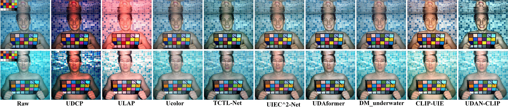
Results on Color-Checker7 dataset
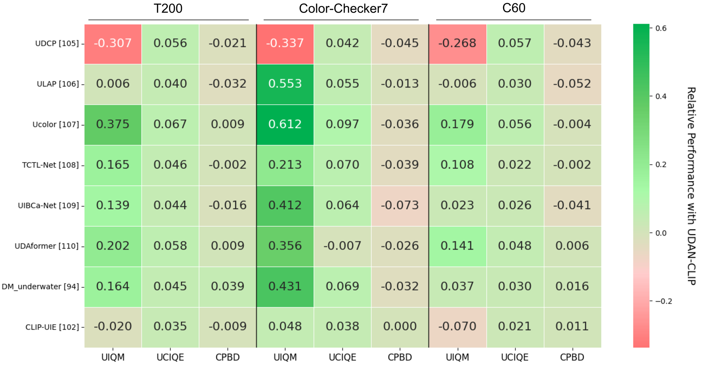
Performance heatmap analysis
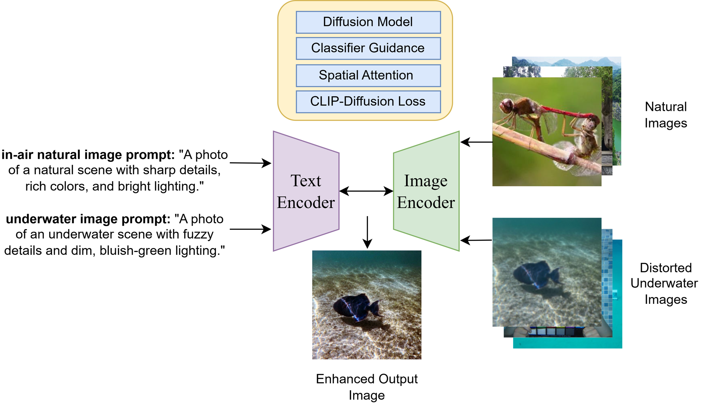
An overview of UDAN-CLIP addressing underwater image degradation and enhancement challenges.
Underwater images suffer from color distortion, light absorption, and scattering effects that significantly degrade visual quality. We propose UDAN-CLIP, a diffusion-based underwater image enhancement framework augmented with contrastive vision-language guidance. Our model integrates domain-adaptive diffusion modeling, CLIP-guided semantic alignment, and spatial attention to focus on severely degraded regions. Extensive experiments demonstrate superior performance over state-of-the-art underwater enhancement methods in both quantitative metrics and perceptual quality.
UDAN-CLIP combines diffusion modeling with contrastive language-image supervision to improve semantic consistency during underwater image enhancement.
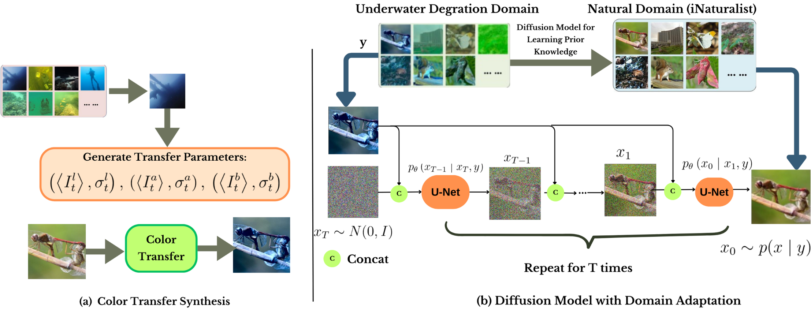
Overall architecture of UDAN-CLIP
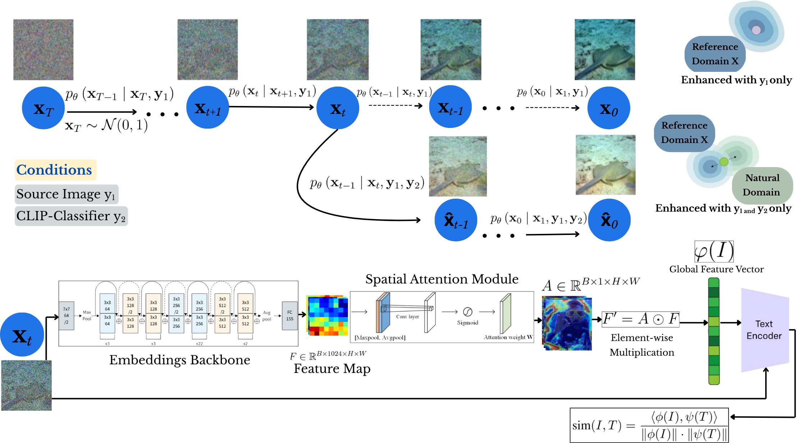
Detailed diffusion module structure
Results on C60 dataset
Results on T200 dataset

Results on Color-Checker7 dataset

Performance heatmap analysis
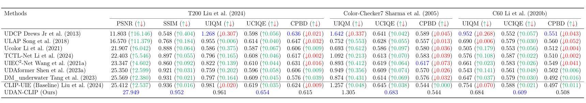
Quantitative comparison on T200, Color-Checker7, and C60 datasets. Values show improvement over baseline methods.
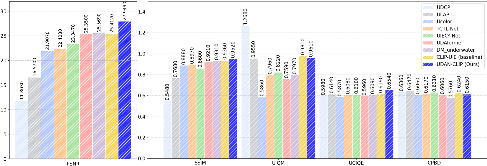
Quantitative comparison on T200 dataset
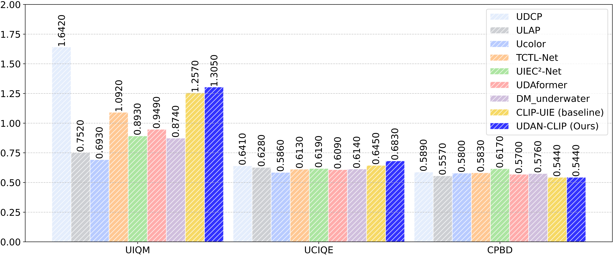
Quantitative comparison on Color-Checker7 dataset
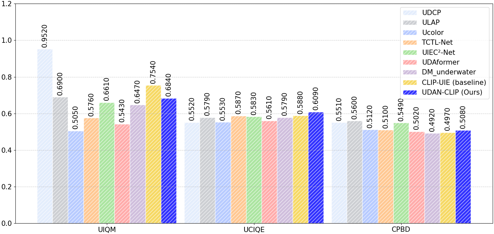
Quantitative results on C60 dataset
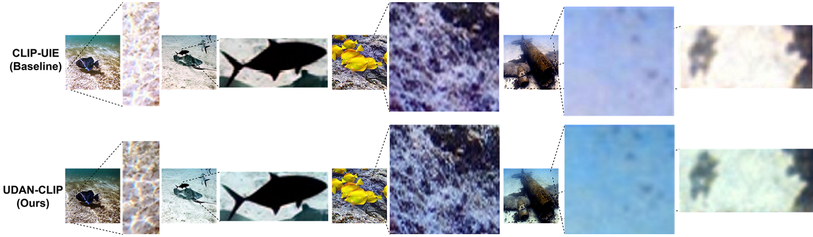
Preservation of fine textures and structural details. Our UDAN-CLIP recovers intricate patterns (e.g., coral textures, fish scales) that are lost or blurred in competing approaches.
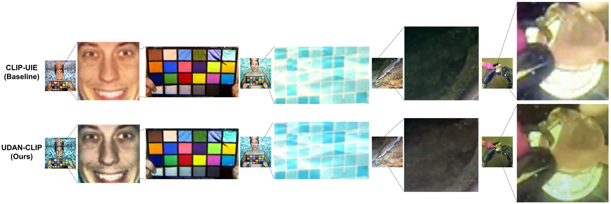
Recovery of fine details in challenging low-light underwater conditions. Our UDAN-CLIP reveals hidden structural elements (e.g., facial features, coin engravings, fish scales, and pool textures) that remain completely obscured in the CLIP-UIE baseline due to severe light absorption and scattering.
@article{shaahid2026udanclip,
title={UDAN-CLIP: Underwater Diffusion Attention Network with Contrastive Language-Image Joint Learning},
author={Shaahid, Afrah and Behzad, Muzammil},
journal={arXiv preprint arXiv:2601.xxxxx},
year={2026}
}